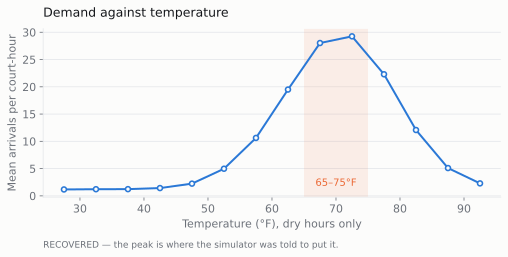
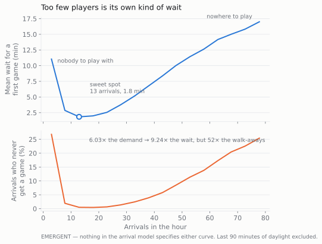
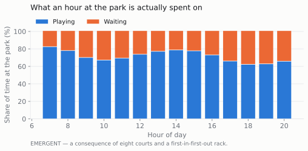
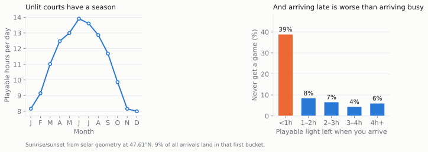
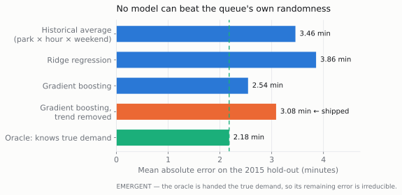
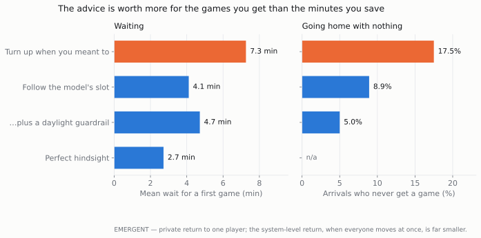
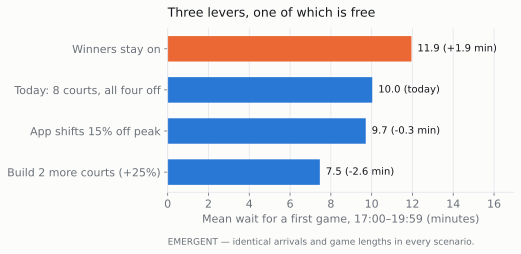

The problem I actually had to solve first
I wanted to know whether telling people the paddle line was long would get them to come at a different time. The obstacle is that no parks department publishes paddle-stack telemetry — which is, incidentally, the reason the product in this case study has a market at all.
So the court sessions here are simulated, and that creates a trap worth naming out loud. If I write down "demand peaks at 70°F" and then run a regression that discovers demand peaks at 70°F, I have discovered nothing at all. I have drawn a picture of my own assumption.
Every result is sorted into recovered — a pattern I wrote into the simulator and then read back out, which proves the pipeline runs and proves nothing about pickleball — or emergent: a consequence of the queue's mechanics that nobody specified. The labels are printed on the charts themselves. Only emergent results were allowed to reach a recommendation.
What is real here
The weather is not simulated. It is four years of NOAA observations from Seattle — 1,461 days, 2012 to 2015 — with hourly temperature reconstructed from the same station's own diurnal shape. Sunrise and sunset are computed from solar geometry at 47.61°N rather than assumed, which turned out to matter more than anything else in the project: an unlit outdoor court offers 13.9 playable hours in June and 8.0 in December.
What I supplied was the behaviour — how many people want to play at 6pm on a mild Tuesday — and it lives in a single dictionary that gets dumped to JSON so a reader can attack the inputs directly instead of reverse-engineering them out of my conclusions. What the simulation supplies is the mechanism: eight courts, four players to a game, a first-in-first-out rack of paddles, and finite patience.

This chart is a receipt, not a finding. The brief for this project asked me to prove demand spikes between 65 and 75°F. You cannot prove that against data you generated — but you can say so clearly and move on to the things you did not put there.
Three things I did not put there
Waiting is U-shaped, because you need four people
I expected the wait to rise with demand. It does — and it also rises when the court is nearly empty, to a mean of 11.1 minutes against 1.8 minutes at the sweet spot of about 13 arrivals an hour. On a quiet court you are not queueing for a court. You are queueing for opponents.
That single observation kills the obvious version of the product. An app that sends you to the quietest court is giving bad advice at one end of its own range, and open play turns out to have a minimum viable crowd as well as a maximum one.

Congestion hides itself
From the sweet spot to the busiest hours, demand rises about 6× and the wait about 9×. The share of arrivals who go home without playing rises 52×.
The queue is self-limiting. It does not grow deeper than people will tolerate; it converts the excess into departures. Which means anyone measuring congestion by counting paddles in the rack is measuring the survivors, and will conclude the problem is smaller than it is. This is why the project reports abandonment rather than queue length — the metric choice is the finding.

Across the evening peak, 36% of the time a player spends at the park is spent waiting rather than playing.
Darkness beats congestion — and I got this wrong first
My first pass reported that 17% of peak arrivals never got a game and called it congestion. Splitting the number by time of day showed that most of it was something else entirely: people arriving shortly before the light ran out.
Separated properly, 7.7% of peak arrivals give up because it is busy, while 38.8% of arrivals in the final hour of usable light go home without playing — and 9.2% of all arrivals land in that hour. The largest single source of wasted trips is not the crowd. It is the sunset, and it is computable a year in advance with no model whatsoever.

The error mattered. Left uncorrected, it would have argued for building courts to solve a problem that a sunrise table solves.
The model, and the ceiling above it
Train on 2012–2014, score on 2015 — a genuinely harder test, because demand grows across the window and the model has to extrapolate rather than interpolate. Alongside four candidate models I ran an oracle: a model handed the true demand that generated the arrivals, which no amount of feature engineering could ever beat.
The oracle still posts a mean absolute error of 2.18 minutes. That residual is the queue's own randomness. It is irreducible, and it settles an interface question that would otherwise be a matter of taste: you can never honestly display "12 minutes." The product ships four states instead — dead, good, busy, packed — because a number invites a promise the physics cannot keep.

The boosted tree scores 15% better on error — and runs 0.77 minutes low, because a tree cannot extrapolate a growth trend past the edge of its training data. Removing the trend first costs accuracy and buys calibration (bias 0.13 minutes). Selection rule, fixed before I looked at which model it picked: lowest absolute bias among models within 1.25× of the best error. Tell someone the wait is 10 minutes when it is 18 and they stop opening the app; tell them 15 when it is 10 and they are pleased.
What the advice is worth, and to whom
To a player, a lot. Routed to the best slot within two hours either side, expected wait falls from 7.3 to 4.1 minutes — 69% of what perfect hindsight would deliver. But the better number is the other one: the chance of going home without a game at all falls from 17.5% to 8.9%, and adding one guardrail — never recommend a slot with under 90 minutes of light left — takes it to 5.0%.
The guardrail beats the model. It needs no training data, it is a lookup against a sunrise table, and it moves the metric that matters more than the forecast does.

To a parks department, almost nothing. When 15% of peak arrivals shift to the quietest nearby slot, system-wide peak wait moves by 3.2%. Information redistributes a queue; it does not shrink one. So this is a consumer product, not a municipal one, and the PRD says so in as many words.
The recommendation I didn't want to make
Every policy scenario re-draws its arrivals, game lengths and patience thresholds from a stream seeded on the park and the date but never on the scenario — the same people, wanting the same games, on the same afternoon, meeting a different court rule. So the differences below are the policy rather than sampling noise.

| Lever | Peak wait | vs today | Effort | Verdict |
|---|---|---|---|---|
| Standardise rotation on “all four off” | 10.0 min | −1.9 vs winners-stay | None | Recommended first |
| Build two more courts (+25%) | 7.5 min | −2.6 min | High — capital, 12–18 months | Real, but expensive |
| App shifts 15% of peak arrivals | 9.7 min | −0.3 min | Medium | Rejected as congestion relief |
| Daylight guardrail (consumer app) | — | no-game rate 17.5% → 5.0% | Low | Ship first |
Effort is a judgment, not a computation — nothing in a court log tells you what a programme costs — so it is recorded per lever rather than folded silently into the ranking. It changes the answer here. Switching open play from “winners stay on” to “all four off” is worth 1.9 minutes of mean peak wait and 5.8 points of abandonment, which is 75% of what a 25% court expansion buys, at the cost of a sign on the fence.
If I were advising the parks department rather than building the app, that is the entire recommendation — and the honest version of this case study has to say that my own product loses to it.
Primary metric: the share of app-influenced visits that end in at least one game. Target ≥92% against an 82.5% unassisted baseline; kill it below a 5pp improvement after one season — the wait-time saving alone does not justify the build. Counter-metric: the share of recommendations landing in dead hours, because optimising for “shortest wait” walks people onto empty courts, which the U-curve says is its own failure.
Two deliverables carry this further: a product requirements document with scope, guardrails and kill criteria, and a behavioural audit that ties each psychological claim to a named simulator parameter, so the psychology is falsifiable rather than decorative.
What I'd do differently
- Herding is the hole in every number here. All the advice figures assume the player taking the recommendation is marginal — one person moving does not change the queue. That is true at low adoption and false at high adoption, which means the product degrades exactly as it succeeds. I test it in one scenario, at an adoption rate I guessed.
- I'd instrument one real paddle stack before building anything. A camera and a clock for a season would settle three of the four behavioural claims directly — whether abandonment outruns wait, whether it concentrates in first-timers, and whether arrivals rise or fall with observed crowding. None of my recommendations survive if the first one is wrong.
- The patience distribution is doing too much work. The median tolerance before a first game is a number I chose, and it sets how much of the congestion appears as waiting versus as walking away. The scenario comparisons are robust to it because they all share it, but the headline wait figure is not.
- I'd model the choice, not just the wait. Players pick between parks as well as between hours, and I only ever modelled the second. A real DinkRadar competes for the same player across five courts, and that is a substitution problem I did not touch.